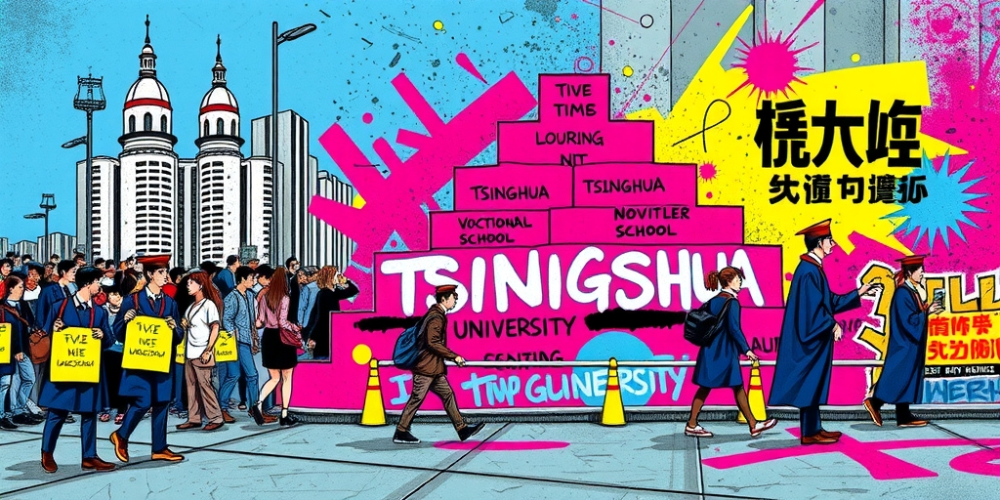
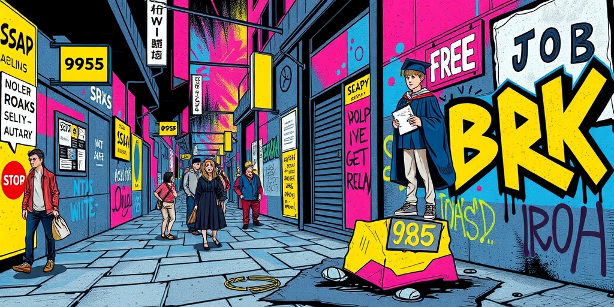
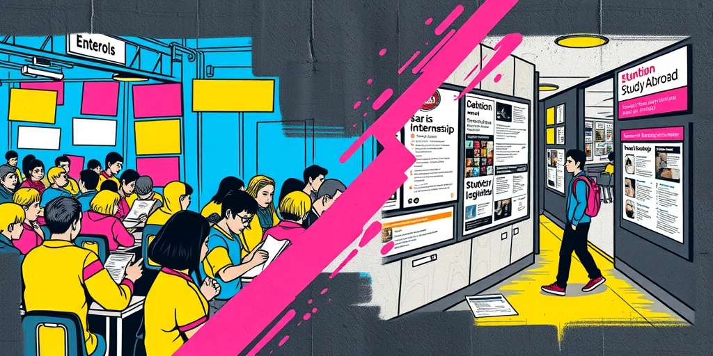
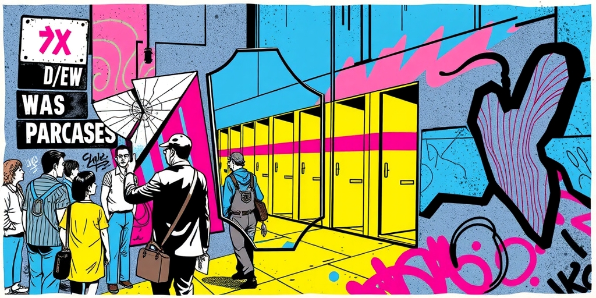
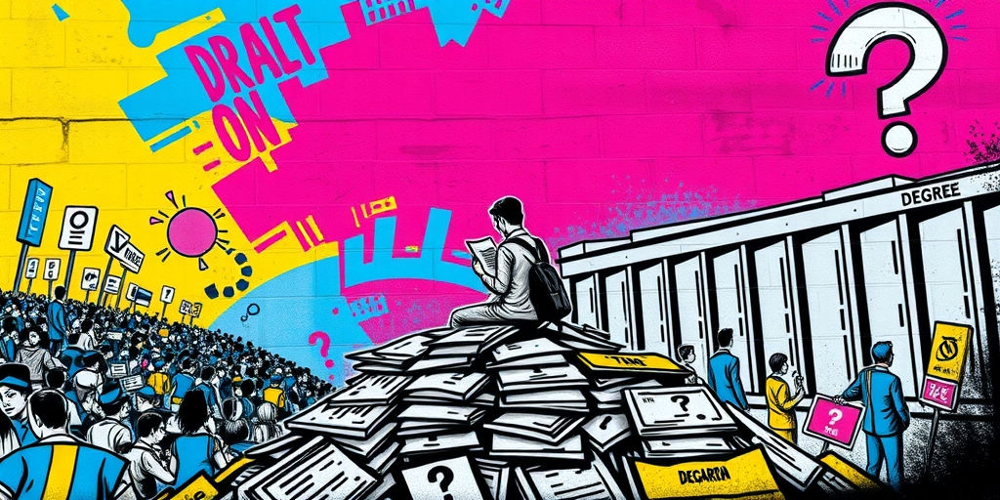

小汪老师的成长洞察 · 属于你的成长专栏
“我是五道口职业技术学校毕业的。”一个清华学生这么介绍自己时，周围人会心一笑。这个梗流传了十几年，但很少有人问：为什么一个顶尖学府的学生，要把自己往下拽到“技校”的位置？这不是谦虚。这是一种带着痛感的幽默，是精英阶层内部的身份暗号——真正职校生不会开这个玩笑，只有学历无可争议的人才有资格把自嘲当勋章。

豆瓣“985废物引进计划”小组聚集了十几万人，小红书上“末流985”是一个活跃标签而非自贬。越顶尖的学校，学生自嘲得越狠。清北学生说自己是“技校”“文理学院”，华五学生自称“末流”，中坚985学生干脆说“毕业于某大专”。这不是真觉得自己差。这是一种极其复杂的、带着痛感的幽默。
他们的参照系从来不是全社会——高考早就赢过全社会了。参照系是同校更优秀的人。当你周围全是各省前1%，你发现自己在这个新池子里可能是后50%。你的真实感受不是“我比99%的人强”，而是“我在这个班里垫底”。自嘲“职校”是对这种相对剥夺感的夸张表达。
985内部有一套外人看来近乎荒谬的鄙视链：清北＞华五＞中坚985＞末流985。圈外人会问“不都是985吗”，圈内人知道这是血淋淋的现实。自称“末流985”的人不是在谦虚，是在这个内部等级里定位自己。而自称“职校”的往往是中上985甚至顶尖学校的学生——他们离顶端最近，最能感受到“还不够”的刺痛。真正末流985的学生反而更可能强调“至少我也是985”。

社会对985毕业生的叙事是一条直线：考上好大学→找到好工作→阶层跃升。但现实是大量985毕业生做着普通工作、拿着普通薪水、买不起一线城市的房。“你是985出来的怎么才这样？”——这句话他们听过太多次。期望值被推到极高，现实却不断向下修正，这种落差是痛苦的来源。
自称“职校”是一种先发制人的防御：我自己先说，你就没机会说了。这是一种精密的心理策略——降低外部期望，保护内心自尊。但它不是虚伪的谦虚。它暴露的是精英阶层内部的一种结构性焦虑：我拿到了这张门票，却发现门票兑换的东西远不如宣传册上画的。
更深一层，这种自嘲是对那套“努力=成功”叙事的小规模反叛。他们从小被灌输“努力就有回报”，他们确实努力了也确实考上了。但当回报远小于预期时，他们没有放弃“努力”这个价值观——毕竟这是他们唯一的武器——而是转而嘲讽这个叙事本身。自称“废物”不是真觉得自己废，是对那个承诺了太多却兑现了太少的方程式的讽刺性告别。

大量985学生来自普通家庭甚至农村，“小镇做题家”不是自嘲是事实。进名校后，他们发现同学在聊留学、聊大厂实习、聊父母的行业人脉——而你连这些词汇都没听过。室友聊GRE，你不知道那是什么；大二才发现有“实习”这件事；毕业时别人靠内推进大厂，你还在海投简历。
你在应试赛道上跑赢了，但在文化资本赛道上起跑线就差了三圈。这种撕裂感是“985废物”叙事的真正燃料——不是你真的废物，是你在一个用另一套标尺衡量人的环境里重新变成了“底层”。你拥有的唯一武器是考试，但考试之后的世界不考这些。
自称“职校”是对这种错位感的黑色幽默：如果人生是一场综合技能大赛，那我确实只相当于职校水平。这不是自我贬低，而是一种苦涩的清醒——我终于明白，那场我赢了的比赛，只是无数场比赛中的一场，而且可能是最不重要的一场。

这个现象最锋利的部分在于：精英自嘲是一种特权表演。一个真正毕业于职业学校的蓝领工人不会在社交媒体上轻松地说“我是职校的”——这不是自嘲，这是事实陈述，带着真实的职业歧视和收入焦虑。只有那些学历铁板钉钉、没有任何人会真的怀疑他们“是不是没上过大学”的人，才有余裕把“职校”挂在嘴边当幽默。
这个自嘲本身就是精英身份的二次确认——我能拿这个开玩笑，恰恰因为我离这个标签最远。但它不是虚伪。恰恰相反：这种自嘲的真诚之处在于，它暴露了精英阶层内部的一种特殊的痛苦——不是“我没有”，而是“我有了足够多的门票，却发现每一扇门后面还有另一扇门”。
考上985是一张门票，研究生是第二张，大厂offer是第三张，买房是第四张……每一张门票都承诺“这是最后一道门”，但永远不是。自称“职校”是一种对这套无限通关游戏的厌弃——“如果这是个没有尽头的竞赛，那我从一开始就没赢过。”

这也能解释为什么顶尖学校的学生自嘲最狠。清北学生面临的不是“能不能找到工作”的焦虑，而是“三十五岁能不能财务自由”“能不能不辜负这个学历”的存在性焦虑。他们的期望天花板被学历推到了极高的位置——不是跟普通人比，是跟自己头脑中那个“如果没考上清北可能会更快乐”的幽灵比。
在这种心态下，“职校”是一种对自己的善意的揶揄——“你要是当年没那么努力，现在可能活得更轻松。”这是对“努力叙事”的集体祛魅。这一代人从小被灌输“努力就有回报”，他们确实努力了也确实考上了。但当他们发现回报远小于预期时，他们没有放弃“努力”这个价值观——毕竟这是他们唯一的武器——而是转而嘲讽这个叙事本身。
自称“废物”不是真觉得自己废，是对那个承诺了太多却兑现了太少的“努力=成功”方程式的讽刺性告别。高考状元后来平庸、竞赛金牌泯然众人、少年班天才回归普通——这些都是同一类痛苦的变体。他们赢了那场最公平的竞赛，却发现赛场外还有无数场竞赛，而手中的门票，似乎永远不够。
写给你的话
当你再听到一个985毕业生说自己是“某技校”的，别急着笑。这个笑话只有他们能讲，因为只有他们离这个标签最远。好笑吗？好笑。也疼。它疼在一种集体性的失落：我们赢了那场最公平的竞赛，却发现赛场外还有无数场竞赛，而我们手中的门票，似乎永远不够。如果有一天，一个真正的职校毕业生也开始用这个梗自嘲，那才说明这个社会的身份叙事彻底失效了。但在那之前，这个梗依然是精英的特权——一种带着裂痕的特权。
小汪老师的成长洞察 · 属于你的成长专栏